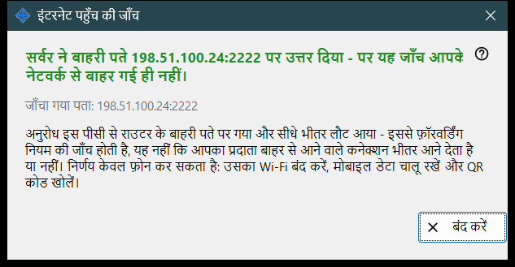
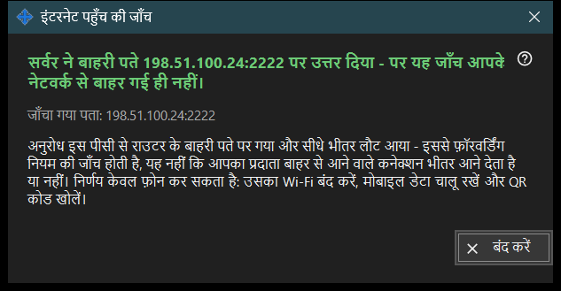

इंटरनेट पहुँच की जाँच
यह किस लिए है
इस पीसी से जाँचती है कि साझा पता SFTP सर्वर की तरह जवाब देता है या नहीं। यह मुख्य विंडो के इंटरनेट पहुँच जाँचें बटन से खुलती है और जो पता परखती है, एक निर्णय और स्पष्टीकरण दिखाती है।


इस क्रम में
- विंडो खोलें; वह पता दिखाती है और जाँच तुरंत शुरू करती है।
- शीर्षक के आने का इंतज़ार करें।
- उसके नीचे की ब्योरे वाली पंक्ति पढ़ें।
- यदि नतीजा निर्णायक न हो, तो Wi-Fi बंद और मोबाइल डेटा चालू करके फ़ोन से जाँच दोहराएँ।
- बंद करें दबाएँ।
तत्व
जाँचा गया पता
जाँचा गया पता: .. होस्ट और पोर्ट दिखाता है। जाँच चलते समय विंडो कहती है: जाँच .. । यदि कोई पता मालूम न हो तो नतीजा है: अभी कोई इंटरनेट पता नहीं। टूटा हुआ पता देता है: पता अमान्य है।
निर्णय
SFTP सर्वर उपलब्ध - पोर्ट ने SFTP के अभिवादन के साथ जवाब दिया। पोर्ट खुला है, पर SFTP ने उत्तर नहीं दिया - पोर्ट पर कुछ सुन रहा है, पर वह हमारा प्रोग्राम नहीं है; देखें कि राउटर का नियम इस पीसी और साझाकरण के पोर्ट तक जाता है। जवाब से पहले कनेक्शन का बंद होना कनेक्शन की सीमा का संकेत हो सकता है; फिर कोशिश करें। इस पीसी से कोई उत्तर न आने का मतलब है कि राउटर अंदर से अपने ही पते को रोक सकता है।
नतीजा निर्णायक क्यों न हो सकता है
अनुरोध इस पीसी से राउटर के बाहरी पते की ओर जाता है और सीधा अंदर लौट आता है, इसलिए वह फ़ॉरवर्डिंग नियम परखता है, यह नहीं कि प्रदाता बाहर से आने वाले कनेक्शन आने देता है या नहीं। इसे केवल फ़ोन तय कर सकता है: उसका Wi-Fi बंद करें, मोबाइल डेटा चालू रखें और QR कोड खोलें। फिर भी न जुड़े, तो इंटरनेट पहुँच कैसे सेट करें बटन से पोर्ट फ़ॉरवर्डिंग सेट करें।
प्रबंधक सेटिंग · SFTP साझाकरण सेटिंग · एक्सचेंज सर्वर सेटिंग